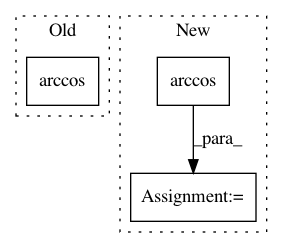

182aa8f209023c3cdd5e14f897306bafcb8b3ced,framework/Optimizers/SPSA.py,SPSA,angleBetween,#SPSA#Any#Any#Any#,204
Before Change
v1, v2 = np.zeros(shape=[nVar,]), np.zeros(shape=[nVar,])
for cnt, var in enumerate(self.getOptVars()):
v1[cnt], v2[cnt] = copy.deepcopy(d1[var]), copy.deepcopy(d2[var])
angle = np.arccos(np.dot(v1, v2)/np.linalg.norm(v1)/np.linalg.norm(v2))
if np.isnan(angle):
if (v1 == v2).all():
angle = 0.0
else:
After Change
angle = 0
else:
dot = np.dot(v1, v2)/np.linalg.norm(v1)/np.linalg.norm(v2)
angle = np.arccos(np.clip(dot, -1, 1))
angleD = np.rad2deg(angle)
return angleD
def _bisectionForConstrainedInput(self, traj, varK, ak, vector):
In pattern: SUPERPATTERN
Frequency: 4
Non-data size: 3
Instances
Project Name: idaholab/raven
Commit Name: 182aa8f209023c3cdd5e14f897306bafcb8b3ced
Time: 2019-11-04
Author: paul.talbot@inl.gov
File Name: framework/Optimizers/SPSA.py
Class Name: SPSA
Method Name: angleBetween
Project Name: pymanopt/pymanopt
Commit Name: 68f33e7d12612fc4f1aaa11c178a8aafb7466cc6
Time: 2016-02-19
Author: jamiehntownsend@gmail.com
File Name: pymanopt/manifolds/oblique.py
Class Name: Oblique
Method Name: dist
Project Name: mil-tokyo/webdnn
Commit Name: 27f6a6d010343d17b9984dcba9cde649bd8d7b82
Time: 2018-01-25
Author: y.kikura@gmail.com
File Name: src/graph_transpiler/webdnn/graph/operators/acos.py
Class Name: Acos
Method Name: fold_constance
Project Name: utiasSTARS/liegroups
Commit Name: e03e14da76e09be93884f8e32ae5acc4cec0a19f
Time: 2017-07-31
Author: clement.leopold@gmail.com
File Name: liegroups/so3.py
Class Name: SO3
Method Name: log